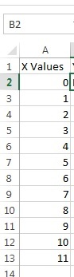
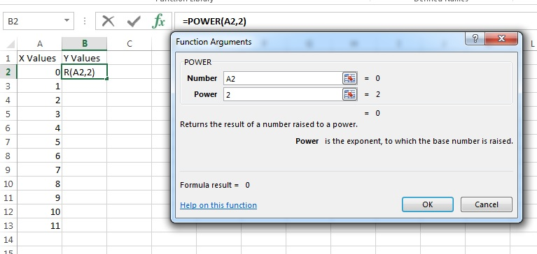
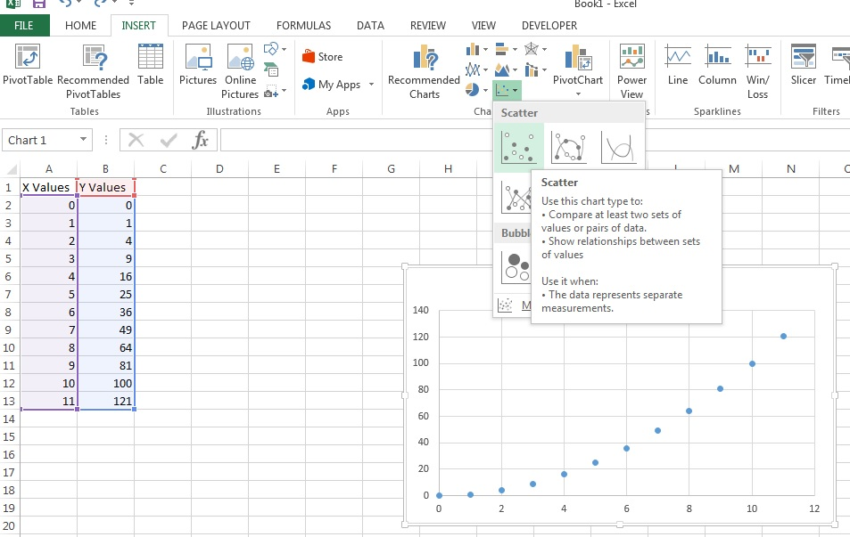
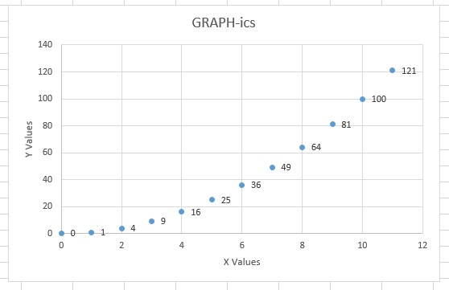

Little Big Data
1 Graph-ics
Try It
- Graphs are important when humans need visualisations of a large data set to help them look for patterns and meaning.
- In this lesson, we're going to investigate climate change in the UK since about 1910, and you'll be able to draw your own conclusions about global warming.
- Before we get too carried away, we'll start by drawing a simple scatter graph and then build up to something more elaborate.
- Load up Excel 2013 and create a new blank workbook.
- We then set the values we want to assign to the X and Y axes.
- In the cell A1 place "X Values" and then in the cells between A2 and A13 place the following values 0,1,2,3,4,5,6,7,8,9,10,11.

- In the cell B1 place "Y Values" and then in the cells between B2 and B13 place the following formula =power(A2,2)
- This will help us draw a y = x2 graph, from x=0 to 11.

- We then select all cells from A1:B13 and click on the INSERT tab and choose from the CHARTS toolbar the Scatter chart.

- Change the title to GRAPH-ics, add labels to the X and Y axis and right click on the blue points to add the data labels.

- Finally, we can move our chart to a new sheet by right clicking on it and choosing MOVE CHART then selecting NEW SHEET and naming it UK WEATHER HISTORY.
- Change some of the values, and plot a different scatter pattern.
Learn It
- As part of a drive to be more transparent, the UK Government have released a little over 25000 raw data sets for anyone to access. You can browse them here.
- We'll look at some climate data from the met office (the UK weather agency). The latest versions of their datasets can be freely downloaded from their site here.
- Scientists believe that in general, the World is getting hotter over time due to the burning of fossil fuels. We'll write a short program to graph over a century's worth of data to see if we can spot a pattern.
Code It
- Download the UK mean temp (make sure you get it year ordered, which is about half-way down the page) dataset to your computer, and open it in a text editor (eg. Notepad).
- The first 7 lines of the file contain a short introduction to what's in the file. This isn't much help to us. Delete all these lines, so that the very first thing in your text file is 'Year, JAN, FEB, etc'.
- Save this file in the same folder you've been saving your code into, and ensure that the filename is uk.txt.
- Next, create a new sheet and name it UK Mean temp. Click on the DATA tab and from the GET EXTERNAL DATA toolbar choose FROM TEXT and look for your uk.txt file.
- The TEXT IMPORT WIZARD should pop up and you should click the NEXT button, followed by another NEXT button, then the FINISH button and finally click on the OK button.
- We've got over a century of weather data here. Each line represents a year's average temperature.
- In the S and T columns, by using the MAX and MIN functions, you can easily verifiy the hottest and coldest months for each year (be sure not to include the WIN, SPR SUM, AUT and ANN values from columns N to R).
- In rows 108 and 109, by using the MAX and MIN functions, you can easily verify the the hottest and coldest temperatures per month over the 105 year period.
Badge It
- Produce a short report on the UK climate, using graphs to support your arguments.
- Silver - In addition to one for the whole UK, plot at least one other graph, and comment on it.
- Gold - Produce multiple graphs and make appropriate conclusions.
- Platinum - Plot data from multiple sources on the same graph, and comment on them. You could compare Scotland and the South of England over the past 2 years, for instance.